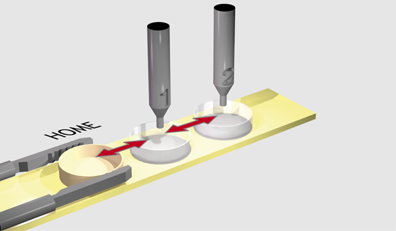
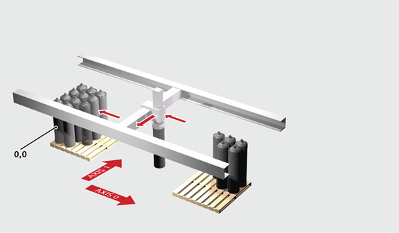

Axis Command
MOVEABS(position1[, position2[, position3[, position4, …]]])
MA()
Absolute position move. Move one axis or multiple axes to position(s) referenced with respect to the zero (home) position. The first parameter in the list is sent to the axis specified with the AXIS command or to the current BASE axis, the second to the next axis, and so on.
In the multi-axis form, the speed, acceleration, and deceleration employed for the movement are taken from the first axis in the BASE group. The speeds of each axis are controlled to make the resulting vector of the movement run at the SPEED setting.
Multi-axis interpolation uses the UNITS, SPEED, ACCEL and DECEL of the BASE axis. For correct XYZ vector operation, the UNITS of all 3 axes must be the same.
If an axis needs to be not included in the vector speed calculation, then INTERP_FACTOR can be set to 0 for that axis.
Uninterpolated, unsynchronised multi-axis motion can be achieved by simply placing MOVEABS commands on each axis independently. If needed, the target axis for an individual MOVEABS can be specified using the AXIS command. This overrides the BASE axis setting for one MOVEABS only.
The values specified are scaled using the unit conversion factor axis parameter; UNITS . Therefore if, for example, an axis has 400 encoder edges/mm the UNITS for that axis is 400. The command MOVEABS(6) would then move to a position 6 mm from the zero position. When MERGE is set to ON , absolute and relative moves are merged to make a continuous path movement.
The position of the axes’ zero(home) positions can be changed by the commands: OFFPOS , DEFPOS , REP_DIST , REP_OPTION , and DATUM .
If the number of axes in the move that follows on from the previous move are different, then they will not MERGE. Likewise, a FORWARD, REVERSE or any linked move (e.g., MOVELINK) will not MERGE with a MOVE or MOVEABS. The MOVEABS will go to the wrong endpoint.
|
position1: |
position to move to on base axis. |
|
position2: |
position to move to on next axis in BASE array. |
|
position3: |
position to move to on next axis in BASE array. |
|
position4: |
position to move to on next axis in BASE array |
The MOVEABS command can interpolate up to the full number of axes available on the controller.
A machine must move to one of 3 positions depending on the selection made by 2 switches. The options are home, position 1 and position 2 where both switches are off, first switch on and second switch on respectively. Position 2 has priority over position 1.

'Define absolute positions
Home = 1000
position_1 = 2000
position_2 = 3000
WHILE IN(run_switch) = ON
IF IN(6) = ON THEN 'Switch 6 selects position 2
MOVEABS(position_2)
WAIT IDLE
ELSEIF IN(7) = ON THEN 'Switch 7 selects position 1
MOVEABS(position_1)
WAIT IDLE
ELSE
MOVEABS(home)
WAIT IDLE
ENDIF
WEND
An X-Y plotter has a pen carousel whose position is fixed relative to the plotter absolute zero position. To change pen an absolute move to the carousel position will find the target irrespective of the plot position when commanded.
MOVEABS(28.5, 350) 'Move to just outside the pen holder area
WAIT IDLE
SPEED = pen_pickup_speed
MOVEABS(20.5, 350) 'Move in to pick up the pen
A pallet consists of a 6 by 8 grid in which gas canisters are inserted 185 mm apart by a packaging machine. The canisters are picked up from a fixed point. The first position in the pallet is defined as position (0, 0) using the DEFPOS command. The part of the program to position the canisters in the pallet is:

FOR x = 0 TO 5
FOR y = 0 TO 7
MOVEABS(-340, -516.5) 'Move to pick-up point
WAIT IDLE
GOSUB pick 'Call pick up subroutine
PRINT "Move to Position: "; x * 6 + y + 1
MOVEABS(x * 185, y * 185) 'Move to position in grid
WAIT IDLE
GOSUB place 'Call place down subroutine
NEXT y
NEXT x
Using MOVEABS with REP_DIST to move to a final position.
REPDIST = 360
DEFPOS(0)
MOVEABS(300) 'Will move through 300 degrees to 300
MOVEABS(200) 'Will move back 100 degrees to 200
MOVEABS(370) 'Will move through 170 degrees to 10 crossing repdist
MOVEABS(350) 'Will move through 340 degrees to 350
if you want to move in the shortest direction to the absolute position use MOVETANG
3 axis interpolated move with only X and Y used for the vector speed calculation. Axis Z follows.
INTERP_FACTOR AXIS(x) = 1
INTERP_FACTOR AXIS(y) = 1
INTERP_FACTOR AXIS(z) = 0
BASE(x, y, z)
SPEED = 10
MOVE(100, 150, 20)
Speeds of axes x and y are set to make the speed along the XY motion path equal 10. Z will move 20 mm taking the same time as the XY pair so will be synchronised with them.
MOVETANG , MOVEABSSP , MOVE , LIMIT_BUFFERED , MERGE , INTERP_FACTOR